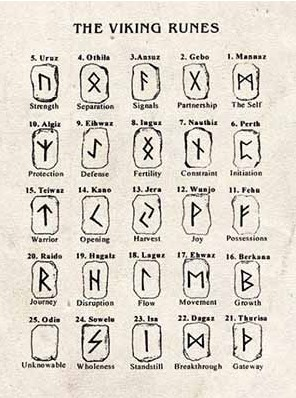
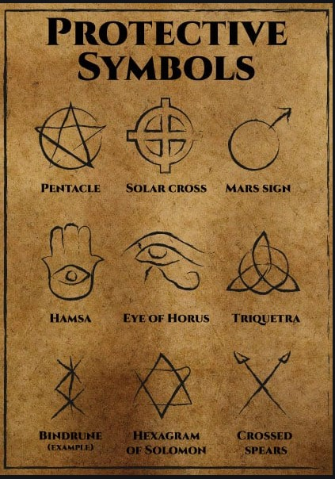

Military
The military has a long history of tattoos. As early as the 1900s, men and women came home from long journeys to show this new way to adorn the body.
Nowadays it is more than just decoration. It is a way to symbolize maybe hard and important memories and to remember what they are fighting for in the moment of need.
The tattoos that are trending the most are: names, faces, symbols, or quotas, for remembering fallen friends, for encouragement, or show the country and people they are fighting for or to show where they belong with unit number or name. Tattoos are also a way to remember who they are as an individual and to not lose track of themselves during harsh trials.
The American Staff Sgt. James Campbell stated in 2019, that for at least the combat arms units as few as 10% do not have a tattoo at the moment. Although tattoos are immensely popular in the army, there are rules to follow. Before 2015 there were regulations about both size and numbers allowed, that regulation was lifted in 2015.
On the other hand, the restriction of visibility is still in use as well as the ban of offensive tattoos. The soldiers are not to have tattoos showing on neck, face, head and hands with exception of one ring tattoo per hand.
So, if you’re planning on joining the army be sure to put your tattoos in the right places!
[4,14,15,16,17]
Religious/ wiccan tattoos

Tattooing and marking of the body, has been an important part and frequently practiced for millennia in most religions.
It was and is a way to feel connected with their deity/deities and to show the strength of their faith, to ward of evil and heal the sick, show status and group identity. The tattoos create a sense of belonging and also a call to attract people of the same beliefs. That is still true today.
Despite this long history of tattooing, it is not accepted in many religions even though their history shows differently. However, this all depends how oneself interpret the word of the Holy Book. In some religions like Islam and Judaism, tattoos are commonly forbidden. while religions like Neo pagan, Buddhism and Hinduism it is still a tradition and sometimes an initialisation rite. For Christianity it is a diverse belief depending on branch and as stated above, the way the Holy Book is interpreted.
The most common Christian tattoo is the cross, the symbol of faith and symbols of similar significance can be found in other religions. Other popular tattoos chosen show the journey of struggle, transition, and healing just as much as memories of loved ones, people’s faith and practice.
Tattoos used In Neopagan or Wicca are mostly symbols and every symbol has meaning or story behind them much as most symbols. Some chosen tattoos of wiccan practitioners are Viking runes, the symbol of once spirit animal or deity/deities like the horned god and moon goddes, the moon stages and elemental symbols. Since most runic symbols can be reversed and has double meaning it is important to thoroughly do your research before making it permanent on your skin.

 
[10,11,12,13,19]
References